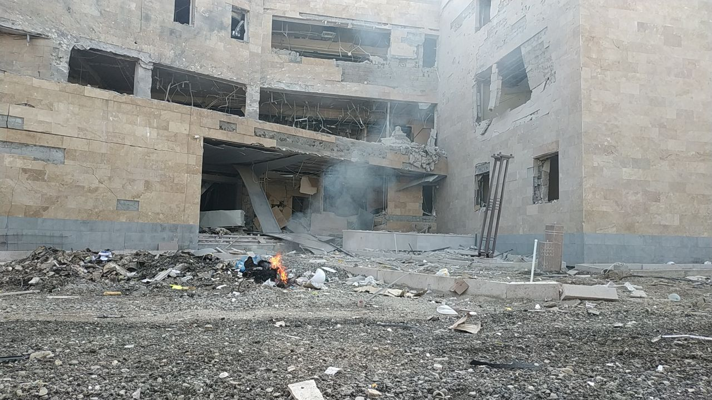
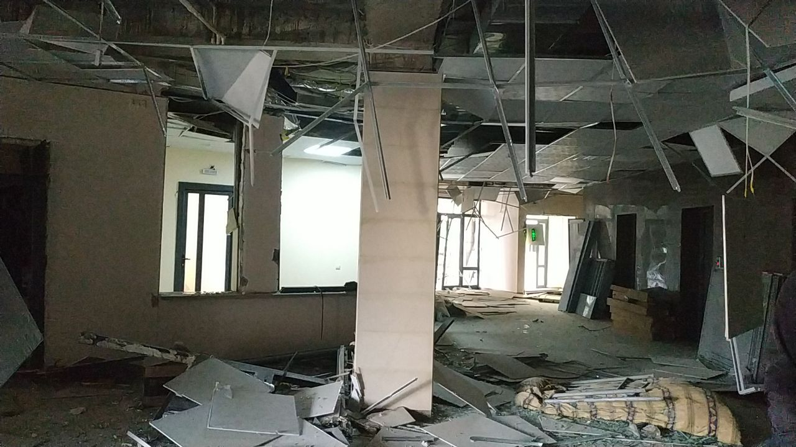

<DOCTYPE html>
</html>
<head>
  <title>News Summer</title>
  <script data-ad-client="ca-pub-4342048092732194" async src="https://pagead2.googlesyndication.com/pagead/js/adsbygoogle.js"></script>
  <link href = "style.css" rel = "stylesheet" type = "text /css">
</head>
<style>
   * {
     box-sizing: border-box;
     }
   body{
     color:white;
     font-size:30px;
     background-image: url(PicsArt_10-27-10.09.08.jpg);
     }  
    .row:after {
    visibility: hidden;
    display: block;
    font-size:9;
    content: " ";
    clear: both;
    height: 0;
    }
  .row { display: inline-block; }
  * html .row { height: 1%; }
  .row { display: block; }
  .header {
    color:orange;
    margin-bottom: 3px;
    }
  .inner-header {
   
    opacity: 0.9; 
    height: 200px;
    }
  .content{
    width: 71%;
    float: left;
    
   
    
    }
  .inner-content{
    background:#3d3c66;
    min-height:500px;
    }
  .sidebar{
    width: 29%;
    float: right;
    padding-left: 12px;
    }
  .inner-sidebar{
    color:white;
    background:#3d3c66;
    min-height: 500px;
    }
  .sidebartwo{
    width:25%;
    float:left;
    padding-left:10px;
    }
  .inner-sidebartwo{
    background:#3d3c66;
    min-height: 500px;
    }
  .footer {
    margin-top: 10px;
    background:#3d3c66;
    height: 100px;
    }
  .inner-footer{
    background:#FFF4ED;
    color:yellow;
    height:100px;
    weight:50px;
    }
  .contenttwo{
    width: 98%;
    float: left;
    }
  .inner-contenttwo{
    background:#3d3c66;
    min-height:500px;
    }
    
  .footer{
    color:white;
    background:#3d3c66;
    }
  .one {
 
  padding: 50px 20px;
  text-align: center;
}
.one h1 {
  font-family: 'Righteous', cursive;
  position: relative;
  color:#21044a; 
  display: inline-block;
  border-top: 2px solid;
  border-bottom: 2px solid;
  font-size: 3em;
  padding: 11px 60px;
  margin: 0; 
  line-height: 1;
}
.one h1:before, .one h1:after {
  content: ""; 
  position: absolute;
  top: 0;
  width: 30px;
  height: 100%;
  border-left: 2px solid;
  border-right: 2px solid;
  background: repeating-linear-gradient(180deg, transparent, transparent 2px, #3CA1D9 2px, #3CA1D9 4px);
}
.one h1:before {left: 0;}
.one h1:after {right: 0;}
@media (max-width: 420px) {
  .one h1 {font-size: 2em;}
}
  .six {
  background: #F7E2C7;
  padding: 50px 20px;
  text-align: center;
}
.six h1 {
  font-weight: normal;
  font-family: 'Merriweather', serif;
  position: relative;
  display: inline-block;
  margin: 0;
  line-height: 1;
  color: #F7844E;
  font-size: 40px;
  padding: .4em 1em .55em;
}
.six h1:before,
.six h1:after {
  content: ""; 
  position: absolute;
  width: 60%;
  height: .1em;
  background: #294200; 
}
.six h1:before {
  left: 0;
  top: 0;
}
.six h1:after {
  right: 0;
  bottom: 0;
}
.six h1 span:before,
.six h1 span:after {
  content: ""; 
  position: absolute;
  width: .65em;
  height: .65em;
  border: .1em solid #294200;
  border-radius: 50%;
  box-sizing: border-box;
}
.six h1 span:before {
  top: -.55em;
  left: -.325em;
}
.six h1 span:after {
  bottom: -.55em;
  right: -.325em;
}
@media (max-width: 600px) {
  .six h1 {font-size: 2em;}
}
@media (max-width: 450px) {
  .six h1 {font-size: 1.5em;}
}
</style>
<body>
<div class="wrapper">
<div class="header">
  <div class="inner-header">
    <div class="one"><h1>Новости осень</h1></div>
    </div>
  <div class="sidebar">
    <div class="inner-sidebar">
      <h2>Погода</h2>
      <!-- weather widget start --><a target="_blank" href="https://nochi.com/weather/taldykorgan-59578"></a><!-- weather widget end --><!-- weather widget start --><a target="_blank" href="https://nochi.com/weather/almaty-10297"></a><!-- weather widget end -->
      <!-- weather widget start --><a target="_blank" href="https://nochi.com/weather/nur-sultan-11233"></a><!-- weather widget end --><!-- weather widget start --><a target="_blank" href="https://nochi.com/weather/thessaloniki-18520"></a><!-- weather widget end -->
      
      <!-- weather widget start --><a target="_blank" href="https://nochi.com/weather/sarkand-w111594"></a><!-- weather widget end --><!-- weather widget start --><a target="_blank" href="https://nochi.com/weather/moscow-18171"></a><!-- weather widget end -->
      
      <!-- weather widget start --><a target="_blank" href="https://nochi.com/weather/tomsk-17430"></a><!-- weather widget end --><!-- weather widget start --><a target="_blank" href="https://nochi.com/weather/omsk-17511"></a><!-- weather widget end -->
      
      <!-- weather widget start --><a target="_blank" href="https://nochi.com/weather/kaliningrad-16026"></a><!-- weather widget end --><!-- weather widget start --><a target="_blank" href="https://nochi.com/weather/saint-petersburg-18398"></a><!-- weather widget end -->
      
      <!-- weather widget start --><a target="_blank" href="https://nochi.com/weather/volgograd-17602"></a><!-- weather widget end --><!-- weather widget start --><a target="_blank" href="https://nochi.com/weather/voronezh-11237"></a><!-- weather widget end -->
      
      <!-- weather widget start --><a target="_blank" href="https://nochi.com/weather/ufa-17460"></a><!-- weather widget end --><!-- weather widget start --><a target="_blank" href="https://nochi.com/weather/pavlodar-56050"></a><!-- weather widget end -->
      
      <!-- weather widget start --><a target="_blank" href="https://nochi.com/weather/aktobe-17438"></a><!-- weather widget end --><!-- weather widget start --><a target="_blank" href="https://nochi.com/weather/karaganda-34753"></a><!-- weather widget end -->
      
      <!-- weather widget start --><a target="_blank" href="https://nochi.com/weather/uralsk-39678"></a><!-- weather widget end --><!-- weather widget start --><a target="_blank" href="https://nochi.com/weather/samara-1193"></a><!-- weather widget end -->

            <iframe style="width:100%;border:0;overflow:hidden;background-color:transparent;height:310px" scrolling="no" src="https://fortrader.org/informers/getInformer?st=1&cat=7&title=%D0%9A%D1%83%D1%80%D1%81%D1%8B%20%D0%B2%D0%B0%D0%BB%D1%8E%D1%82%20%D0%A6%D0%91%20%D0%A0%D0%A4&texts=%7B%22toolTitle%22%3A%22%D0%92%D0%B0%D0%BB%D1%8E%D1%82%D0%B0%22%2C%22todayCourse%22%3A%22%22%7D&mult=1&showGetBtn=0&hideHeader=0&hideDate=0&w=0&codes=1&colors=false&items=2%2C21%2C30%2C11111&columns=todayCourse&toCur=27"></iframe>
      <!--LiveInternet counter--><a href="//www.liveinternet.ru/click"
target="_blank"></a><script>(function(d,s){d.getElementById("licntAE93").src=
"//counter.yadro.ru/hit?t27.11;r"+escape(d.referrer)+
((typeof(s)=="undefined")?"":";s"+s.width+"*"+s.height+"*"+
(s.colorDepth?s.colorDepth:s.pixelDepth))+";u"+escape(d.URL)+
";h"+escape(d.title.substring(0,150))+";"+Math.random()})
(document,screen)</script><!--/LiveInternet-->
      
    </div>
  
    <div class="footer"> 
      Тех.поддержка-brizanovtimur@g
      mail.com
     
    </div>
  </div>
</div>
<div class="container row">
  <div class="content">
    <div class="inner-content">
      <h3>Новости за 29 октября</h3>
      </div>
    </div>
  <div class="content">
    <div class="inner-content">
     <h3>Новости за 28 октября </h3>
      <h3>Утренние новости</h3>
      <h3>Что случилось этой ночью: среда, 28 октября</h3>
      <h3> Краткая сводка событий, произошедших к утру:

– Режим обязательного ношения медицинских масок начался в России. Носить маски положено в общественных местах. Общественными местами считаются любые пространства в помещениях и на улице, где может находиться более 50 человек.

– Более 500 уголовных дел за организацию беспорядков завели в Белоруссии. Следственный комитет отметил радикализацию протестов. Милиция проверит всех заявителей на сотрудников правопорядка.

– Режиссер Роман Виктюк госпитализирован из-за коронавируса. Он восстанавливается после заражения. Сегодня Виктюку исполнилось 84 года.

– Бартомеу покинул пост президента ФК "Барселона". Остальные члены совета директоров покинут свои посты. Бартомеу работал президентом клуба с 2014 года.

– "Локомотив" проиграл "Баварии" в Лиге чемпионов УЕФА. "Бавария" дважды выходила вперед в матче. Немецкий клуб закрепился на первом месте в группе А Лиги чемпионов, а "Локомотив" оказался на третьем.</h3>
    <h3>Обеденные новости<h3>
      <h3>Перепись родников провели в Алтайском крае</h3>
      
      <h3>Участники проекта "Чистые родники Алтая" составили экологические паспорта для 210 родников в Алтайском крае, сообщает пресс-центр краевого правительства.

Проект проводился Алтайским краевым отделением Русского географического общества при поддержке Фонда президентских грантов, сказано в сообщении. Важным направлением проекта стало вовлечение общественников в изучение, обустройство и сохранение родников. В течение года участники проекта занимались сбором информации. В ходе экспедиционных исследований они уточнили и дополнили данные о географическом положении родников, провели их экологическую паспортизацию. Для 40 родников специалисты сделали анализ макрокомпонентного химического состава. Участники проекта обустроили и расчистили 25 родников.

"Санитарное и техническое состояние родников края разное: от благоустроенных каптажей до примитивных устройств в виде выводной трубы. Около 80% обследованных родников нуждается в реконструкции каптажа и защите от загрязнения, у большинства источников подземных вод отсутствуют зоны санитарной охраны. Главный аргумент в пользу необходимости продолжения работ по проекту - неравнодушное отношение к родникам жителей и гостей края", - отметила координатор проекта "Чистые родники Алтая" Ирина Архипова, слова которой приведены в сообщении.

Всего в рамках проекта в крае провели 11 эколого-просветительских мероприятий, три из них - дистанционно. Также в рамках проекта организовали семинар, четыре конкурса, девять выездных полевых занятий. Специалисты также разработали курс "Занимательная гидрогеология". Его материалы размещены на образовательном портале Алтайского краевого отделения Русского географического общества.</h3>
      <h3>Ночные новости</h3>
      <h3>ВС Азербайджана бросили авиабомбу на Республиканскую больницу в Степанакерте, прямо на здание роддома.</h3>
      
      
     
      
      </div>
  </div>
  <div class="content">
    <div class="inner-content">
      <h3>новости за 27октября</h3>
      <h3>утренние новости</h3>
      <h3>  В Роспотребнадзоре допустили ухудшение ситуации с COVID-19 в феврале—марте. В ведомстве полагают, что к летним показателям Россия вернется ближе к лету 2021 года. Накануне, 26 октября, в стране был установлен очередной рекорд по числу выявленных за сутки новых случаев заражения. О пандемии в России</h3>

<h3>Глава МИД РФ Сергей Лавров прокомментировал решение ЕС ввести санкции в отношении россиян в связи с предполагаемым отравлением политика Алексея Навального. По словам дипломата, Брюссель «взял за правило разговаривать с Россией с позиции презумпции ее виновности во всем», а само «дело Навального» показывает неспособность ЕС адекватно оценить происходящее в мире.</h3> <h2>О санкциях</h2>

Сегодня, 27 октября, коллегии Минобороны РФ и Белоруссии обсудят подготовку к совместным стратегическим учениям «Запад-2021». Последние раз совместные стратегические учения «Запад» страны проводили в 2017 году. Тогда в маневрах приняли участие около 13 тыс. военных.</h3>
    <h2>обеденные новости</h2>  
    <h3>Мэрия сообщила о росте зарплат врачей и учителей Москвы почти в 3 раза</h3>
    <h3>  Зарплаты учителей с 2010 года в Москве выросли в 3 раза,   врачей в 2,7 раза, среднего медицинского персонала - в 2,2 раза, сообщил заммэра столицы по вопросам экономической политики и имущественно-земельных отношений Владимир Ефимов журналистам во вторник.

"За 9 месяцев текущего года средняя зарплата учителя в Москве составила 116,9 тыс. рублей, врача 156,4 тыс. рублей, среднего медицинского персонала 91,9 тыс. рублей", - уточнил Ефимов.

В свою очередь глава департамента экономической политики и развития города Кирилл Пуртов пояснил, что рост расходов городского бюджета на заработную плату учителей и медиков - "отражение важности этих профессий для города".

"В сравнении с 2010 годом бюджетные ассигнования на зарплату московских учителей выросли в 2,2 раза, на зарплату врачей в 2 раза, на зарплату среднего медицинского персонала - в 1,2 раза", - сказал Пуртов.

 </h3>
      <h3>На проспекте Абая в Алматы вырубят 47 деревьев, которые признали высохшими и потерявшими вид</h3>
      <h3> В Алматы на проспекта Абая вырубят 47 деревьев. Их признали на этом участке "аварийными" и высохшими, сообщили в управлении зелёной экономики города.

Дендрологи и общественники изучили состояние деревьев на разделительной полосе дороги на проспекте Абая от проспекта Достык до улицы Байтурсынова. Здесь растут 306 деревьев:

хвойных – 254;лиственных – 26;плодовых – 24;кустарники – 2.

Специалисты осмотрели их. Выяснилось, что часть из них высохла. В связи с этим, комиссия постановила разрешить вырубку деревьев, которые находятся в неудовлетворительном состоянии. Из 306 вырубят 47, а на другие участки пересадят 23 дерева.

Зелёные насаждения на разделительной полосе проспекта Абая в последнее время потеряли свой эстетический и декоративный вид. Высаживалось на этом участке всё хаотично: есть и хвойные и лиственные и плодовые деревья, отметил член рабочей группы, руководитель сектора защиты леса и зеленых насаждений института защиты карантина растений Нуржан Мухамадиев.

"Дело в том, что на проспекте Абая загруженная проезжая часть, там очень много транспорта, а это выхлопные газы. Вторая причина усыхания снова упирается в машины: зимой на дорогу сыплют солевые реагенты, что негативно сказывается на плодовых деревьях. Хотелось бы видеть разделительную полосу на проспект Абая в едином стиле", – сказал Нуржан Мухамадиев.

Он отметил, что на этом участке лучше посадить засухоустойчивые и солеустойчивые породы.

"Например, прекрасно подошёл бы ясень. В целом, с Абая часть усыхающих деревьев необходимо снести, высадив взамен другие, приспособленные к этому участку деревья. Есть другая часть: сформированные сосна, вяз – их можно пересадить на другие участки города", – сказал Нуржан Мухамадиев.

  </h3>
  <h3>Итоговые новости за день</h3>
  <h3> В Ростовской области на 16 октября коронавирусной инфекцией болели 1397 медработников, а еще некоторое количество врачей находились на самоизоляции по требованию Роспотребнадзора. Об этом на заседании оперштаба заявил и.о. главы регионального Минздрава Александр Крат</h3>
    
      <h3> Минобороны Армении опубликовало видео обстрелов ВС Азербайджана по территории Армении</h3>
    
      <video width="620" height="240" controls>
      <source src="VID_20201027_221536_041.mp4">
Your browser does not support the video tag.
      </video> 
      
   
  </div>
  <div class="contenttwo">
    <div class="inner-contenttwo">
      <h2>
        <h2>новости за 26 октября</h2>
      <h2>За прошедшие сутки в Казахстане выявлены 140 заболевших с положительным ПЦР на коронавирусную инфекцию</h2>
      
      <h3>Нур-Султан - 23;
Алматы - 15;
Акмолинская область - 14;
Актюбинская область - четыре;
Алматинская область - восемь;
Атырауская область - три;
Восточно-Казахстанская область - 25;
Жамбылская область - три;
Западно-Казахстанская область - пять;
Карагандинская область - 10;
Костанайская область - шесть;
Мангистауская область - один;
Павлодарская область - 12;
Северо-Казахстанская область - девять;
Туркестанская область - два.

Всего в стране выявлены 110542 заболевших.</h3>
    <h2>Женщина стала Акимов района в Алматы</h2>
      
      <h3> Гульнара Кокобаева родилась 11 января 1974 года. В 1998 году окончила Казахский государственный юридический университет, в 2019 году – Московский государственный университет имени Ломоносова.

Трудовую деятельность начала в 1998 году в должности старшего специалиста-консультанта по кадровой работе Управления юстиции Алматинской области.

С 2000 по 2002 годы работала ведущим специалистом отдела организационно-кадровой работы, главным специалистом отдела организации юридических услуг Управления юстиции Алматинской области.

В 2002 году была главным специалистом организационно-контрольного отдела Комитета регистрационной службы МЮ РК.

С 2002 по 2005 годы – ведущий специалист отдела организационно-контрольной и кадровой работы Управления юстиции г. Алматы, главный специалист отдела регистрации юридических лиц Департамента юстиции Алматы.

С 2005 по 2007 годы – начальник отдела ЗАГС Управления юстиции Алмалинского района Алматы.

С 2007 по 2013 годы – начальник отделов организации работы по регистрации актов гражданского состояния и апостилированию, регистрации юридических лиц, регистрации прав на недвижимое имущество Департамента юстиции Алматы.

С 2013 по 2016 годы – заместитель руководителя Департамента юстиции Алматы.

С 2016 по 2020 годы – руководитель Департамента юстиции Алматы.

С августа 2020 года занимала пост заместителя руководителя аппарата акима Алматы.

Награждена медалью "Әділет органдары жүйесін дамытуға қосқан үлесі үшін", юбилейной медалью "20 лет Конституции Республики Казахстан", орден "Құрмет".
       

    </div>

 </h3>
     </h2>
   </div>
    </div>
  </div>
  <script type="text/javascript" src="//s7.addthis.com/js/300/addthis_widget.js#pubid=ra-5f991ffdaf5ec23b"></script><script type="text/javascript" src="//s7.addthis.com/js/300/addthis_widget.js#pubid=ra-5f991ffdaf5ec23b"></script>
</body>
